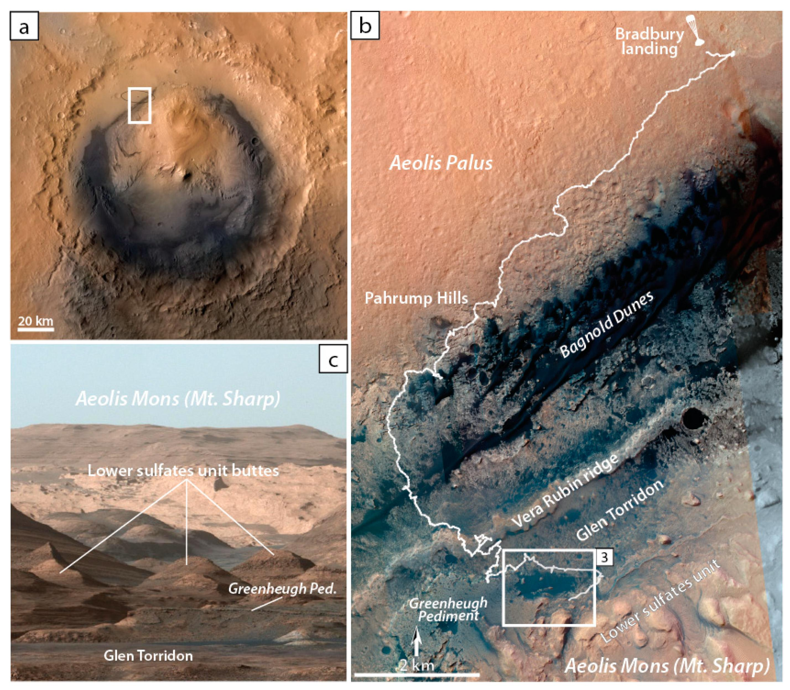
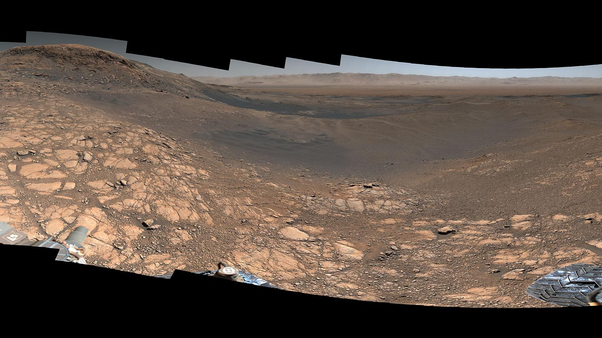
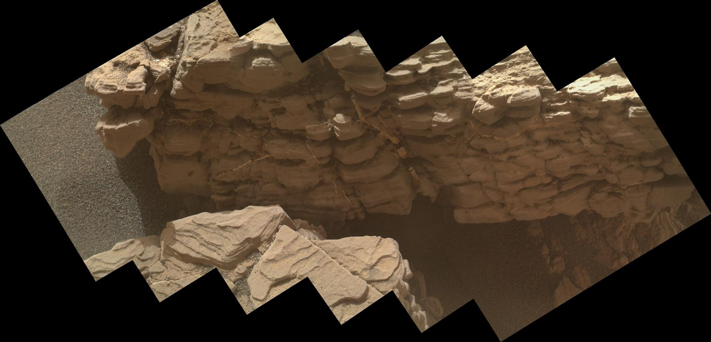

Broad gently sloping debris-mantled plains outside Gale Crater's northern rim, incised by the sinuous Peace Vallis drainage channel (lined with transverse aeolian ridges), NW tributaries, scattered low hills, and larger rugged hills on the southern approach toward the crater rim.
Surrounded by Vera Rubin Ridge (N), Greenheugh Pediment sandstone caprock (SW), and Lower Sulfates Unit buttes (SE). Features polygonally fractured bedrock and laminated mudstone outcrops.



SELECT TARGET OBJECTIVE (CLICK 2D MAP OR CHOOSE SITE)
MANUAL EVA CONTROL: W / S Drive Forward & Reverse | A / D Steer Left & Right
Follow the glowing Green A* Guidance Beacons on the Martian surface or explore Gale Crater freely. Click top-right 2D map anytime to re-route.
NASA / USGS / JPL Mission Dataset Manifest
All 18 research portals, scientific papers, and mission layers provided by our team are directly modeled in the 154×154 km Gale Crater engine and 3D WASD Simulator:
1. Geologic Mapping & Global Topography (USGS / JPL / Mars Trek)
USGS SIM3292 Global Geology Map of MarsTanaka et al., 2014 (USGS)
Records the distribution of geologic units and landforms across Mars through time (Noachian highland rim, Hesperian transition units, Amazonian aeolian dunes) using thermal infrared and MOLA datasets unaffected by atmospheric haze.
🔗 Mars Trek SIM3292 Global Geology |
USGS Planetary Geologic Mapping Program |
JPL PIA02820 Mars Topography
MGS TES Global Thermal Inertia (3-km / 20 ppd)Putzig et al., 2005, Icarus 173, 325-341
Measures subsurface heat storage during the day and night reradiation. Distinguishes unconsolidated sand/dust traps (Bagnold Dunes <150 TI) from cemented bedrock (>350 TI) critical for astronaut & rover traction.
🔗 Mars Trek MGS TES Thermal Inertia Layer
MGS TES Dust Cover Index (DCI, 3.5-km / 16 ppd)Ruff & Christensen, 2002, JGR Vol. 107
Quantifies spectrally obscuring fine dust accumulations independent of albedo. High dust cover (<0.93 DCI) masks underlying mineralogy and degrades rover/suit solar array efficiency.
🔗 Mars Trek MGS TES Dust Cover Layer
3. Autonomous Rover Driving & AI Terrain Classification
AI4Mars Dataset & JPL Rover Driving Route SystemNASA Open Data / JPL Edu
Terrain-aware autonomous driving dataset labeling Martian surface into Soil, Bedrock, Sand, and Big Rocks, paired with JPL rover route-planning constraints.
🔗 AI4Mars Dataset (data.nasa.gov) |
JPL Map a Mars Rover Driving Route